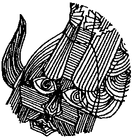

Bayındır denen, bizim gibi saklanmak zorunda kalmadığı için hiçbir zaman bir kutsal adı, şem-ha kodeş’i olmayan, o tek adlı kodoşun nerede olduğunu biliyordum. Sarkel’in surlarına yine Güç Kulesi’nin yakınlarında açılan yoldan girdik. Hemen hiç direnişle karşılaşmadık. Yalnız, en yakınımızdaki evlerin damlarından gelen seyrek bir ok sağanağına tutulduk. Kule baştan aşağı çıra gibi tutuşmuş, kalın çam kütükleri ateşe direnip ayakta kaldıkları için alevler hâlâ göklere direk olmuş, bu kanlı kızıl gökleri bu kule tutuyor gibiydi. İç kaleye doğru, az da olsa çarpışa çarpışa giderken kulenin kıyısından geçtik.
Kulenin en üstünden kişioğlunun tüylerini ürperten, kanlarını buz eden çığlıklar geliyordu. Ruhumu orada bırakmışım da o yoksul şimdi orada yanıyor, kavruluyor gibi sarsıldım. Herkes gördü ve duydu. Beni izleyen Hazar savaşçılarının arasında ağlayanlar vardı. Çok büyük bir çarpışma yaşamadan iç kaleye ulaştık. Askerlerim arasında Hazar kılıklı erleri gören savaşçılar kısa bir ikircik yaşıyor, ya “Sarkel!” diyerek saldırmaya kalkıyor ve anında oklanıyorlar ya da çoğunun yaptığı gibi, hiçbir şey söylemeksizin aramıza katılıyor, gidip yerlerini buluyorlardı.
İç kalenin sarı taştan değil, bütünüyle pişmiş kızıl tuğladan yapılmış gösterişli surları önünde küçük ordumu durdurdum. Var gücümle bağırdım:
“Bayındır Han! Bayındır Han!”
Surun üzerinde, bakırla kaplı yüksek kapının üstündeki iki küçük dört köşe kuleden birinin kapısı açıldı. İnce bir gölge dışarı itildi. Selcük!
“Tigin! Tutsağız. Arsılan ve ben. Bayındır bizi öldüreceğini söylüyor!”
“Selcük, Han kılığına girmiş o sıçana söz ilet, karşıma gelsin. Anlaşalım. Sarkel’in surlarında büyük gedikler açıldı. Salur ile Urus’un ordusu ev ev dolaşıp insanları kesiyor. Urus işçileri dış surdaki gedikleri genişletmekle uğraşıyor. Mancınıklar iki saat sonra burada olur. Geç kalırsa aynı kırım burada yinelenecek. Biz kendisini kurtarabiliriz. Karşıma çıksın!”
Çıktı. Hanlar Hanı. Gölgelerin Hakanı. Erdem nedir bilmeyen it. Eline bir gün kılıç alıp uğraşa girmemiş yiğit! Arsılan uruğunun, uğuşumun yüzkarası. Selcük’ün itildiği o kuleden çıktı. Demek ki beni bekliyormuş encik! Seslendi:
“Tigin, bana dokunmayacağınıza söz verin!”
“Veriyorum Han, Arsılanların kutsal lekesi adına, biliğimdeki okum, belimdeki kılıcım adına söz veriyorum. Ne Oğuz, ne Rus, ne Hazar, beni izleyenlerin iğinden hiçbirinin eli sana kalkmayacak!”
“Diğerlerini say, diğerlerini saymadın! Uyanıklık yapma Tigin!”
“Sayayım Han, beni izleyen Bulgar, Sabır, Oğur, Çuvaş, Macar, Peçenek... daha sayayım mı?”
“Yok! Hepsini tek tek sayma! Herkes de. Yeter.”
“Beni izleyen herkes Han’ın yaşamına saygılı olacak, ordumdan kimsenin eli Han’a bulanmayacak!”
“Peki Tigin, nasıl inanayım?”
“Kapıyı aç yanına geleyim. Bir saat sonra da ordum içeri girsin!”
“Tigin ya seni öldürtürsem, ya seni yine tutarsam? Nasıl güveniyorsun bana?”
“Sen kendi başının kaygısında ol Bayındır. Benim işime burnunu sokma. Elinde ben varım zaten. Yüreğimin parçası Arsılan orada değil mi? Adı görklü Selcük orada değil mi? Bir ben daha fazla olursa bir şey olmaz. Eline çok bir şey geçmez. Ama senin sonun da pek değişmez. Değil mi Han?”
Sarkel kermeninin ağır kapısının sol kanadı açıldı. Tek başıma yürüdüm, içeri girdim. Bayındır ile bir kez daha altın otağında görüştük. Tutsaklık günlerimde Bayındır’dan nasıl öç alacağımı düşünürken daldığım uykular usuma düştü. İşte Bayındır karşımdaydı. Bir Hazar ölüsünün yanından aldığım kanlı kılıcımla, bir vuruşta öldürmek işten değildi. Biliyordum ki öyle bir şey yapsam Bayındır’ın yaşayan en yakın ve erişkin akrabası olduğum için, şu iç kale ahalisi önümde yere kapanacaktı. Yapmadım ve yalnız onun değil, iç kaledekilerin hepsinin ölüm buyruğunu damgalamış oldum.
Çökmüş, yıpranmış bir görünüşü vardı. Ben boğazını kesmeden önce Azman bana nasıl bakıyorsa öyle bakıyordu. O zaman anladım ki, Han Bayındır da kendi kulesinde hapistir. Bu on dört yılı ve ondan öncesini kendi Güç Kulesi’nde tutuklu geçirmiştir. “Odası” daha geniş olduğu için, eğlencesi daha bol olduğu için, tutsakçılardan dayak yemediği için, yiyeceği, içeceği, suyu, kımızı bol bulamaç olduğu için, Tanrı’nın yarattıkları önünde eğilip kalktığı için, özü kutu olmadığı için, usu kıt olduğu için, o bu tutukluluk durumunu anlamamıştır bile. Şimdi de pek anlamış sayılmazdı. Yanına altınını gümüşünü alabilir miymiş? Olur Han. İsteyen Hazarlar arkasından gitsin miymiş? Peki Han. Atlarını da alsın mıymış? Olur Han! Uzak akrabama acıdım. Gök gözlerime yaş yürüdü. Benim ailemin iki yüz yıldır içinde debelendiği düşe o da dalmak üzereydi. Varsın Sarkel düşsün, Koca İdil ne güne duruyordu? Eğer İdil’e de saldırmışlarsa, Semender’e, belki Belencer’e gitmek, bozkırdaki destekçilerini örgütlemek, olursa Sarkel’i yeniden almak istiyordu Han. Eğer bunları yapmaya gücü yetmezse, o zaman da yeraltına inecek, gizlilik yollarına, saklılık izlerine sardıracak, bir gün hiç görmedikleri nahlat avot’a, babalarının yatağına dönmek için dört gözle bekleyen, söz verilen toprak parçalarına kavuşmak için her engeli aşmaya, o uğurda ölmeye, öldürmeye hazır çocuklar yetiştirecekti. O an, o gününü bilmediğim 965 yılının yazında Köktürklerin iki yüzyıldan artık süren düşü sona erdi. Artık dirilecek, diriltilecek bir Arsılan uruğu kalmamıştı. Ben Tengere Tardu Tigin, yaşadığım sürece bir hanedan kurmamaya karar verdim. Bozkırın uzun tarihinde “Tengereli” diye bir devlet olmayacaktı. Kutsal bildiğim her şey adına ağır yemin ettim.
Han ile anlaştık. Adamlarına el etti, önce altın otağı ve altın tahtı sökmeye başladılar. Sonra altını gümüşü atlara katırlara yüklediler. Abınçuları, konçuyları çadırlı arabalara doldurdular. Her birinin koynunda koltuğunda ipek kumaş toplan, altın gümüş ibrikler, leğenler vardı. Hazar soyluları olan Aldıazarlar, yüzlerinde derin kin çizgileriyle hanlarını taklit ettiler. Sarkel’in yüz bu kadar yıl yığdığı malın mülkün, sanırım yarısını arabalarına sığdırdılar. Bayındır’ın avuç avuç altın Urum solidileri dağıttığı erler, atlarını eyerleyip Han’ın tuğu altında durdular. Parayı koynuna koyup yanıma gelmeye uğraşan birini Han’a haber verdim. Uyanığın hemen boynunu vurdular. Han işaret etti, adamın koynundan çıkan parayı kelleyi vuran aldı. Omzumu silktim, ister istemez gülümsedim. Kuyruğu kedinin pençesi altına kısılan sıçan kendini hâlâ han sanıyor, kimine ölüm, kimine ödül yandırıyordu.
Sonra Han işaret etti. Kermenin kapısı açıldı. Kınıklar ve diğerleri tek sıra halinde içeri girdiler. İç kale düşmüştü. Hemen erlere, duvarlara çıkıp savunma durumu almalarını söyledim. Bir tiginin değil, bir Maşiah’ın peşine düşen erler oldukları için, Hazar soylularının mallarıyla mülkleriyle ilgilenmediler. Bayındır Han’ın hangi usa kulluk içinse, bu uğraş gününde kapalı tutturduğu pusatlığı açtırdım. Han ve Akhazarlar altınlarını gümüşlerini bırakamadıkları için, yersizlikten, kamış saplı güzelim okların ancak pek azını alabilmişlerdi. Demet demet okları surun üstüne taşıttım. Fıçı fıçı katranları yukarıya çıkarttım. Her on adımda bir fıçıyı tutuşturttum. Bayındır Han da gülümsüyor, “At senin, pusat senin, var biraz da sen oyalan, belki benim kadar başarılı olur, böyle mal yığarsın” der gibilerinden yüzüme bakıyordu. En son, en genç karısını ve henüz kundakta bir bebek olan küçük çocuğunu alarak arabalardan birine bindi.
İşaret ettim, kapının her iki kanadı birden açıldı. Bayındır Han, eğer iyi kullanılsa daha birkaç Sarkel veya İdil yapacak altını gümüşü atlarına arabalarına yükletmiş, Sarkel kentinden, bozkırın kilidinden, kentin yüreğinden çıkıyordu. Son Akhazar atlısı da çıkınca kapılan kapattırdım. Soylu evlerinde ne kadar eşya varsa kapının ardına yığdırdım. Halılardan başladım. Dürülmüş halıları kalın tomruklar gibi kapının arkasına, ta sura kadar, beş altı sıra olacak gibi dizdirdim. Adamlarımın şaşkın bakışları altında kuyulardan kova kova su çektirip hepsini güzelce ıslattırdım. Sonra da, daha dayanıksız bir engel olduğunu bile bile, salt halılara baskı olup onları yerinde tutsun diye diğer eşyayı halıların önüne yığdırdım.
Biz yel gibi bunları yapmıştık ki, iç kalenin biraz altındaki Sarkel sokaklarında kızıl kıyamet koptu. Tam beklediğim gibi, Urus Koca ve Salur Kazan denen o iki koca kurt, Bayındır Han’ın besili atları ve süslü arabaları bütünüyle kapıdan çıkmadan kırıma başlamamışlardı. O budala da, gelen giden olmadığını görünce Sarkel’i alanların yalnızca benimle birlikte gelenler olduğunu sanarak gönül rahatlığı ile kentten çıkmaya davranmış, Sarkel’in dar sokaklarında sıçanlar gibi kapana kısılmıştı. Belki bir savunma ve saldırı çizgisi oluşturabiliriz diye geriye, kermenin eteklerindeki açıklık alana çekilmeye davrandılar. Selcük ve neredeyse Selcük’ün boyuna ulaşan Arsılan’la beraber, birkaç saat önce tutsak oldukları kulenin içinden aşağımızdaki kanlı vuruşmayı izlemeye başladık. Han’ın yanındaki binden az erin içinde gerçekten pek yaman vuruşanlar vardı. Paralı askerler olan ve kendilerine “Ors bölüğü” denen Harzemli erler pek yaman vuruşuyorlar, attıkları ok boşa gitmiyordu. Doğruydu, savaştan kazandığın parayı yemek için önce yaşamayı becermek gerekti. Kendi erlerime söyledim, pusatlıktaki urganlardan ip merdivenler yapmaya başladılar.
Okları tükenen Harzemli birliğin erleri, eğri kılıçlarını kınlarından sıyırarak yağılarına girdiler. Çok sert bir direnişle karşılaşan saldırganlar biraz duralayınca, Bayındır’ın adamları arabaları hemen önümüzdeki alana sokabildiler. Bizim, yaylarımız gerili olduğu halde oklarımızı atmadığımızı görünce arabaları bir halka yapmaktan caydılar. İki sıralı bir yarım ay yaptılar. Arkalarını kaleye verdiler. Bu anlamda, Bayındır’a koruyucu bir kalkan olmuştuk. Hatta, bizim Hazarlarımızdan bazı erler, dayanamayıp Bayındır’a saldıran birliğe ok attılar. Kalanları güç önledim. Dolayısıyla, Urus Koca ve Salur Kazan’la pek arkadaşça söyleşecek gibi durmuyorduk. Bayındır Han, sözümün ne anlama geldiğini yeni anlamış gibiydi. Benim yanımdaki hiç kimsenin eli, Han’a ve adamlarına kalkmıyordu. Benim olmayan, beni izlemeyen kişiler için söz vermek pek yakışık almazdı. Ben de vermemiştim zaten. Yine de Bayındır kaleye kadar at tepip haykırmaktan kendini alamadı:
“Tengere Tigin, aldattın beni!”
“Sanmam Han! Bak bakalım, bizden size saldıran var mı? Olursa söyle, kellesini alayım!”
“Yok ama, aşağıdan gelenler var! Niçin söylemedin tüm kuşatanlar adına konuşmadığını alçak?”
“Sordun mu Han? Sorsan söylerdim.”
Söverek geri döndü. Yaşamının hu son anlarında biraz yiğitleşmiş mi nedir? Sağa sola ok çekip duruyor, kötü de vurmuyordu.
İki korkunç saat sonunda Urus ve Oğuz erleri aşağıdaki savunmanın belini kırdılar, belkemiği demek olan arabaları yanar oklar ile yaktılar. Korkunç bir kıyım, çirkin bir kırım başladı. Kadınlarla çocuklara bile kimse acımıyordu. Selcük ve Arsılan bakmak bile istemediler. Aşağı gönderdim onları. Ben de dışarı, surun üstüne çıktım. Daha kapıkulenin içindeyken, söyleşen iki eri duydum. Biri, duyurmak istercesine “Yiğit Maşiah’ımız nerededir? Gören var mıdır?” diyordu. Çıktım. Bir Maşiah’a uğraş gününde saklanmak pek yaraşmaz ve yaramazdı.
Aşağıda Bayındır Han artık gerçek bir kahraman gibi vuruşuyordu. Elinde iki ağızlı bir savaş baltası olduğu halde vuruşmanın en önlerine koşuyor, vurduğunu deviriyordu. Gözlerim, yaşamımı karmakarışık eden, yıllarımı alan bu insan için doldu. Utanmasam ağlayacaktım. Bayındır Han genç karısı ve küçük bebeğinin önünde arslanlar gibi çarpışırken bir ok, gözkapağına dokundu. Bir an duraladı. Elinin kenarıyla gözlerindeki kanı sildi. Sol omzuna inen korkunç bir balta vuruşu ile çöktü. Sonra yay gibi yerinden fırladı, baltasını fırlattı attı, eğri kılıcını sıyırdı, koşarak Urus ve Oğuz erlerine kendini vurdu. Bir yanar oddur ki samanlığa düştü ya da bir börüdür ki koyun sürüsüne girdi. Sonra oklar ile delik deşik oldu. Başı görünmez oldu. Arsılan uruğundan Hanlar Hanı Bayındır Han o gün yok oldu. Yok olduğu gün han oldu.
Sarkel’deki yüzlerce yangın, güneşin batarken kızıla boyadığı ufukları aydınlatamasa bile yağmacıların işlerini pekâlâ kolaylaştırıyordu. Gittikçe dinmesine karşın sabaha dek çığlıklar, haykırışlar, iniltiler duyduk. Yağmacılar bir evi soyup soğana çevirdikten sonra ateşe veriyor, yanan evi, ötekine geçerken ışık kaynağı olarak kullanıyorlardı, iç kalenin çevresi, böyle bir gün düşünülerek halka biçiminde, bir iki evlik bir sıra halinde bütünüyle boş bırakıldığı için, kentte gittikçe yayılan yangından uzak kalabiliyorduk. Yine de, tuhaf bir vınlama çıkararak kalasların içinden fırlayan kızgın çivilerin bize kadar ulaşması olasıydı. Herkese dikkat edin, tetik durun dedim. Kermenin eteklerine kadar gelip yalvaran kentlileri ve bazı Harzemli erleri sarkıttığımız ip merdivenlerle içeri aldık. Bunların arasındaki Köktürklerin, gidecek başka bir yerleri olmadığı için kermenin savunmasında daha bir canla başla çalıştıkları görülüyordu. Ben yine de, başından beri benimle birlikte olan Hazarlara, bu yeni gelenlerin arasına saldırganlardan kimse karışmaması için gözlerini dört açmalarını söyledim.
Arabalara bakan taraftaki bütün ateşlerin aşağı indirilmesini sağladıktan sonra, bütün bir kermen halkının şaşkın bakışları altında, bir ipe tutunarak surun dışına indim. Peşimden gelmek isteyenleri elimle durdurdum. Yıllarca içinde yaşadığım ve gördüğüm karanlıktan sonra bana gün gibi gelen yıldızlı karanlığın içine daldım. Bayındır Han’ın en son saldırısına geçmeden önce vuruştuğu yeri buldum. Yılların karanlığında en ufak bir sesi duymaya alışan kulaklarım beni yanıltmamıştı.
Vurulmuş ve ölmek üzere olan anasının kucağından Bayındır’ın bebeğini kaptığım gibi geriye, iç kaleye döndüm. Kadıncağız gözleriyle sağ ol dedi. Daha önceden, bir ipin ucunda sarkıtılmasını istediğim sepete bebeği koydum. Kendim, bu kez bir ip merdivene tırmanarak içeri girdim. Ateşlerin yine yerlerine taşınmasını ve herkesin çok dikkatli olmasını isteyerek aşağı indim.
Biraz sonra Selçuk, kollarında tuttuğu ufaklığa inanamayarak bakıyor, yanaklarından yaşlar süzülüyordu. Küçük, bir yaşında bile olmayan, tombul toraman bir oğlandı bu. Bayındır Han’ın oğlu. Uzaktan akrabam. O, ben ve Arsılan İsrail, uruğumuzdan son kalanlarız. Selcük,
“Madem bir sepet içinde bize geldi, adı Musa olsun bunun” diye ellerini çırpmaya başladı.
“Olur, ama bir de günlük adı olsun, İnanç nasıl?” diye sordum. Çok beğendik. Musa İnanç Bey, Selcük Aka’nın Tengere Tigin’i bir kez daha “aldatmasına” gerek olmadan gelen oğul! Selcük koştu. İç kaleye sığınmış Hazarların içinden bir taze gelin buldu getirdi. Kadının kucağında Musa’dan biraz daha küçük bir bebek, gözlerinde kurumuş yaşlar, yanaklarında yırtıklar ve tırnak izleri vardı. Musa İnanç, kadının dolu göğüslerine hırsla, inançla saldırdı. Arsılan dahil, hep gülümsedik.
Gece, Han’ın evinde, Han’ın bir odasında, yumuşak bir yatak üstünde Selcük’le uzanmış, biraz uyumaya çalışıyorduk. Yan odada Musa’nın tayası ve çocuklar uyuyordu, ilk iş. Dedeyi sordum. Bilmiyordu Selcük. Han’la birlikte bu son gelişlerinde, Dede bir gün ortalıktan yitmişti. Bayındır çok öfkelenmiş, Selcük ile Arsılan’ı tutturmuş, Çonra’yı Dedeyi bulmaya göndermişti. Peki, ya Oğuz ile Urus nasıl dikilmişti Hazar’ın karşısına? Dede’nin denge oyununa ne olmuştu? Selcük tam bilmiyordu. Ama Hazar ravlarının son yaptıklarının bunda bir parmağı olabilirdi. Bir gün, Başrav Kaplan, İdil’in Hazaran semtindeki yerel Bet ha– Migdaş’ın önünde, sırtına saplı bir bıçakla ölü bulununca Bayındır, ikinci ravı, Benyamin Incir’i başrav olarak atamıştı. Yeni başrav iş başına gelir gelmez zırvalamaya başlamış, dinden çıkan Oğuz’u doğru dine geri kazanma işine kalkışmıştı.
Uygun bir dille, Oğuz’un zaten hiçbir zaman tam olarak Hazar’ın dininde olmadığını, dinlerinin kendi atalarının diniyle karışık olduğunu ona söyleyenleri,
“İyi ya! Bakın bu benim dediğimi doğruluyor! Bunların doğru dine sokulmaları gerek. Şimdiye kadar sallamışsınız başınızı, yemişsiniz arpanızı! Oğuz diye bir şey yoktur. Bozkır Hazarı vardır. Han’ın ekmeğini kazanmak gerek. Bu da kıçımızın üzerine oturmakla olmaz!” diyerek susturmuş, Hazar devletinin yeni ve gözükara bir tutum takınmasını savunmaya başlamıştı. Buna “Yerinde Duramayan Hazarcılık” adını vermişti. Düşmanları iki günde bu tutumun adını “Kıpırdak Hazarcılık”a çıkarmışlar!
Kıpırdak Hazarcılık’ın ilk gerçek uygulaması, Bayındır Han’ın bir yarlık çıkararak tüm Oğuz boylarına tulum peyniri yapımını yasaklaması olmuştu. Benyamin İncir, bu işe benim adımı da karıştırmış,
“Rav Tengere’de okuduğum yazılı Tora’da ‘et ve sütü bir arada tutmayın, anasının sütünde yavrusunu pişirmeyin’ diye buyuruyordu. Şimdi koyunun sütünü peynir yapıp yavrusunun derisine doldurmak ne demek oluyor? Bu tulumlar güneş alımda kalınca pişmiyor mu? Bu Oğuz aklını başına alsın!” diye bir hareket başlatmıştı. Sonra, başında kızıl börk olan Oğuz yiğitlerini İdil’e, Sarkel’e ve diğer kentlere sokmamaya başlamışlar.
İncir, yakın arkadaşlarına şöyle diyormuş:
“Bu Oğuz’un ne kalabalık olduğunu börkünden gördüm, ürktüm ben. Bebeler de ürkmesin bari.”
Dışarıya sunulan gerekçeyse biraz daha değişikti. Buna göre kızıl börküyle Hazar’a gelen sözde Maşiah Tengere’nin destekçileri olan Oğuzlar kızıl börklerini bir simge olarak kullanıyorlar, Hazar barışını bozmaya çalışıyorlarmış.
Böylece, İdil’e, Sarkel’e ve diğer kentlere giden gelen Oğuz sayısı iyice düşmüş. Ticaret tavsamış. Bozkırdan kentlere argış, kervan gönderen kalmamıştı. Bazı derin inançlı kentli Hazarların ayda yılda bir kentlerine gelen bazı Oğuz tüccarlarını döverek mallarını ellerinden almalarıysa tuz biber olmuş, Oğuz’u çıldırtmıştı. Kıpırdak Hazarcılık, kağanlığın tüm taşlarını kıpırdatmıştı sonunda.
Üstelik, Benyamin İncir, bende gördüğünü söylediği Tora’daki buyruklara uygun olduğunu öne sürdüğü bir bitig, bir kitap yazmış, üşenmemiş, birini de Salur Kazan’a göndermişti, inanmış yoksulun bu içten davranışı hem Oğuz, hem Hazar’da epey bir yanlış anlamaya yol açmıştı. Benyamin’in kitabının adı Hazar Kağanlığı’nın Çöküşü imiş. Tabii ki, “eğer doğru dine uyulmazsa Hazar kağanlığı çöker” konulu, bir uyarı kitabı imiş, içinde bol miktarda Yeruşalayim’den, Eriha’dan, Ad’dan, Semud’dan söz ediliyormuş. Bayındır Han kitabı görünce öfkesinden hop oturup hop kalkmış. Çünkü, Başrav İncir, iyi niyetle de olsa kentlerin güçsüz noktaları nedir, bir bir sayıp döküyormuş kitapta. Tabii, “aman koruyup kollayalım yoksa...” düşüncesi varmış kitapta, ama sevmeyenleri vermişler fiti Han’a, vermişler fiti...
Salur Kazan’ın ise ağzının suyunu akıtmış kitap! “Hımm, bu o topuzu açıklıyor!” diye düşündüm. Sonuçta görünen oydu ki bir inanç savaşı patlak vermişti. Daha doğrusu, kendi köşelerinde uslu uslu duran inançlar adına kişioğlunun giriştiği sonsuz savaşlardan bir savaş!
Urus Kocanın ise doğru inançla, yanlış inançla hiçbir alıp veremediği yokmuş. Semenderin, İdil’in, Sarkel’in dillerde dolaşan baylığı, zenginliği nasıl olur da kendi kentlerine geçer düşüncesindeymiş. Asıl adı Svyatoslav olan Urus Koca, Kiev kentini başkent edinmiş bir Urus prensiymiş. Gücü gün geçtikçe artıyor, ünü bozkıra dalga dalga yayılıyormuş. Anlaşılan o ki, en batıdaki Sarkel’den başlamıştı. Eğer Dede haklıysa, bu Hazar işinden sonra yoldaşı Salur Kazan’a saldırması çok olasıymış. Dede’nin savlarını yıllardır biliyordum. Ellerimi iki yana açarak söylendim:
“Aman, Selcük, nerede o günler? Dede’nin Urus prenslerinin davranışları üzerindeki savları gerçekleşmeden bunlar bizi elbirliği ile lokma edecekler gibi duruyor!”
“Haklısın Tigin! Adamlar el ele vermiş, bizi kuşatmış. Onlarla aramızda bir yoksul tuğla duvar ve Tuğak’ın Kınıklarından başka bir şey yok!”
Selcük babasını anınca, Güç Kulesi’ndeyken bir türlü çözemediğim, hep sormayı kurduğum soruyu biraz da patavatsızca soruverdim:
“Bayındır, Tuğak’ı niçin öldürttü Selcük?”
“Tigin, söylemesi biraz güç ama Tuğak, Bayındır’ı tahtından indirmek üzereydi. Güvenebileceği bir Maşiah bulur bulmaz bu işi yapacaktı...”
“Evet, Tigin! Çünkü Bayındır, yabgunun üzerine ordu göndermek istiyordu. Bırak şimdi bunları. Davulları duyuyor musun?”
Duyuyordum. Odadan dışarı fırladım. İki dakika sonra duvarın üstündeydim. Bir gün önce Urus Koca ile Salur Kazan’ı gördüğüm, Güç Kulesi’nden pek de uzak olmayan yandan davul sesleri geliyordu. Sonra davul sesleri hızlandı, hızlandı. Önce “günaydın, haydi toplanın” davulu sandığım davullar susmak bilmiyordu. Sonra günaydın demek için henüz erken olduğunu, “dün baskını” vermek isteyen bir ordunun da davul dümbelek çalmayacağını anladım. Hepimiz seslerin geldiği yere bakıyorduk. Güç Kulesi’nin yıkıntısı hâlâ alev alev yanıyor, Sarkel dış surunun mancınıklarla yıkılan bölümünü, o koca gediği aydınlatıyordu. İç kale ile kule arasındaki bütün evler temellerine kadar yandığı için çok açık olarak görebiliyorduk. Yanı başımda duran ve bu işlerde bilgili olan Yaşıl Kır, “Tigin, albız çıkarmak istiyorlar” diye fısıldadı. Ah ah, Salur Kazan’ın kamları, şamanları! Yanımdaki Kınık erleri ürkmüşlerdi. “Aman üzerine alınıp ‘dayı’sı çıkmasın da” dedim. Pek gülemediler bile.
Davullar hızlandı, hızlandı. Büyük, kocaman, tek bir vuruş oldu. Bütün Sarkel’i sarsan ve karanlık gökleri aydınlatan bir patlama duyuldu. Sonra, hepimiz gördük, Güç Kulesi’nin akkor durumuna gelmiş yıkıntısından iki adam boyunda bir alev dili koptu. Hızla Sarkel dışına çıktı. Kuşatanların ordugâhına dokundu. Çadırlarını, ağırlıklarını alevler içinde bıraktı. Bozkıra doğru uzaklaştı. Gitti. Davullar sustu. Tan yeri ağardı, sonra kızıllaştı. Güneş, Sarkel denen açık mezarlığı yavaş yavaş aydınlatmaya başladı. Havada sarı bir duman, havada is, havada yanmış çam ağacı, havada çiğ ve pişmiş insan eti kokusu vardı. İç kale dışında tüm Sarkel dış surlara kadar yanmıştı.
“Belki çekip gitmişlerdir” diyerek biraz avunduk. Birleşik ordular, tabanları yanmasın diye yangın yerlerinden değil, eski sokaklardan yürüyüp karşımıza geldiklerinde, yaylarımızı germiş bekliyorduk. “Dayı Bey” kendi geri durmuş “yeğenini” öne sürmüş gibiydi! Ön sıralarda hep Oğuz erleri vardı. Salur Kazan öne çıktı. Dün benim yaptığım gibi bağırarak görüşmek istediğini söyledi. İstersem yukarı gelebilirmiş. “Gel Yabgu” dedim, “iki de konuğum var” diye ünledi. Erlerin arasından iri biri öne çıktı: Korkut Ata! Ellerimi ellerime çaldım, güldüm. Diğeri bir Urus kocasıydı. Kapımız kapalı olduğu için ip merdivenler sarkıtıp onları yukarı aldık.
Dede’nin ortaya çıkması yüreğime soğuk sular serpmişti. Anlaşılan bozkırda yeni bir “denge” kuruluyordu. Anlaşmak olasıydı. Selcük de geldi. Bayındır’ın evinin damında küçük keçe bir çadırın içinde konuştuk. Yiyecek sıkıntımız olduğunu düşünmesinler diye sofraya toprak kaplar içinde dağlar gibi yiyecek yığdırmıştım. Urus dilmaç artık ne anladı bilemem, az ve öz konuştuk. Tez elden anlaştık. Salur Kazan dişimize kadar pusatlandığımızı, vuruşmaya hazır olduğumuzu, kermende değil hazine tek bir gümüş tas bile olmadığını anladı. Selcük taze kaynamış yumurtaları göstererek sözü açtı:
“Tok ağırlaması güç olmasa yumurtaya buyurun derdik!”
Korkut Ata’dan onaylar bir bakış geldi. Salur sarı ala gözlerini Selcük’ün gök ala gözlerine dikti. Az daha elçiliğe geldiğini unutup oklatacaktım. Neyse ki yolsuz, arsız davranmadı. Kötü konuşmadı,
“Yumurta tokuşturmak başka güne kalsın Selcük Aka!” dedi. Büyük bozkır bilgesi Korkut Ata,
“Ah şu kara buğra çöküp sırtındaki yumurtaları kırmasa biz de size armağan getirirdik” diye devam etti.
Son sözü ben söyledim:
“Ah bizim de yumurtlayacak tavuğumuz yok! Bunlar kalan son yumurtalar.”
Biz anlamış ve anlaşmıştık. Urus Koca’nın adamı Urus dilmaç da kaynamış yumurtaları ikişer üçer götürürken bir şeyler anlamış olsa gerekti. Birazdan buradan çıkınca doğrudan prensine gidecek, anladığını anlatacak, Salur’la aramızın birlikte yemek yiyemeyecek kadar kötü olduğunu söyleyecekti.
Alımlarını almış, görümlerini görmüş olarak geri döndüler. “Kara buğra,” kuşatmacıların büyük mancınığı, yanmış! Bize atacak taşları yokmuş! Uzun bir kuşatma olmayacaktı. Salur eldeki erleri kırmak istemiyordu. Ama arkadaş markadaş değildik, bozkırda nasıl olsa bir gün hesaplaşacaktık. Bizim söylediklerimiz de açıktı. Selcük, “burada yağmalanacak bir şey yok, tok adamlarınız boşuna ölmek istemez” diyordu. Ben de “yeni bir hanedan kurmayacağız” diyordum. Sarkel yağmasında payını alan Yabgu bir an önce Yengikent’e gitmek istiyordu. İş, arkasında bekleyen Urus ordusunu atlatabilmekteydi.
Salur’a bu konuda biraz yardım etmeye karar verdim. Kösçülere emrettim. Bayındır Han’ın büyük köslerini vurmaya başladılar. Kiniğin en iyi okçularına uzağa yay çekmelerini ve her on okçudan birine de yanar ok almasını söyledim. İki yüz elli okçu yaylarını bir uğurdan boşalttılar. Salur’un erlerinin başının üslünden geçen oklar Urus saflarını dalgalandırdı. Svyatoslav’ın henüz kurulmakla olan çadırı ve bazı ağırlıklar alev aldı. Sarkel kermeni savaşı başlamıştı. Urus Koca erlerini bir yüz adım daha geriye aldı. Salur Kazan buyurdu, Oğuz yiğitleri yaylarını gerdi boşalttı. Oklar bir adam boyu üzerimizden geçti. Anlaşmıştık. Danışıp, dövüşecektik. Bugün için kimse kimseyi kırmayacaktı. Akşamdan hazırladığımız ip merdivenleri aşağı saldık. Salur bir daha buyurdu, Oğuz yiğitleri merdivenlere saldırdı. Urus safları heyecana kapılarak biraz yaklaştı. Kermenden yine oklar uçuştu. Onlarca Urus savaşçısı, yüzlerce Oğuz dövüşçüsü yerlere serildi. İp merdivenleri kesiverdik, tırmananlar düşüverdi. Akşama kadar olan vuruşmalarda, öne sürülen Oğuz yiğitlerinin yarısı yerlere serildi kaldı. En önde, Tanrı tözünü yarlıgasın, Korkut Ata yatıyordu. Daha uzun yıllar yaşayacak olmasına karşın bu, Dede’yi son görüşümüzdü.
Akşama doğru, karanlık yavaş yavaş çökerken Kazan’ın “sağ kalan” ve “ölü yatan” Oğuzları kuyruğu kaldırdı. Urus saflarını bile geçerek sağa sola dağıldı. Yiğitler yiğidi Salur Kazan yanında üç kişi kaldığı halde kermene ok yağdırıyor, attığını da atmadığını da vuruyordu! İşini biraz daha kolaylaştırayım dedim. Temreni çengel olmayan kuş oklarından biri ile sol uyluğundan Kazan’ı vuruverdim! Koca çınar aniden yıkıldı. Yanındaki üç kişi Yabgu’yu koltuklayarak Urus Koca’nın yanma götürürlerken, Kazan denen ejder, Urus savaşçılarının gözleri önünde, etini yırta yırta oku çekti, çıkardı. Yayına koyup kermene yolladı!
Urus Koca’ya bu kadarı yetmeliydi, ama yetmedi. Erlerine buyurdu. Savaşçılar, düşmüş ve henüz bir kolayını bulup kalkamamış Oğuz erlerinin içinden geçerek kermene saldırdılar. Ellerinde ağaç merdivenleri, çengelleri, baltaları ile kötü geliyorlardı. Gerçekten zorlu bir vuruşma oldu. O akşam on dakika içinde dört yüz Kınık oku dört yüz Urus vurdu. Merdivenleri kermene dayayabilenler yine oldu. Söyledim. Kimse elleşmedi. Her merdivenin üzerinde en az üç savaşçı olunca buyurdum, yanar katran kaplarını bir uğurdan aşağı boşalttılar. Yanar çıra olup sağa sola kaçışan erleri oklayarak yoksulların acılarını dindirdik.
Gece savaş alanının üstüne kalın bir örtü gibi çöktü. Bayındır’ın kösünü vurdurmaya başladım. Ses, Sarkel’den çıkarak tüm bozkırı kaplayan bir ağıt gibi dalga dalga havaya dağıldı. Ertesi sabah gün ışırken baktık. Savaş alanında bir tane bile Oğuz ölüsü, karşımızda bir tane bile Urus eri yoktu.
Kuşatma kalkmıştı.